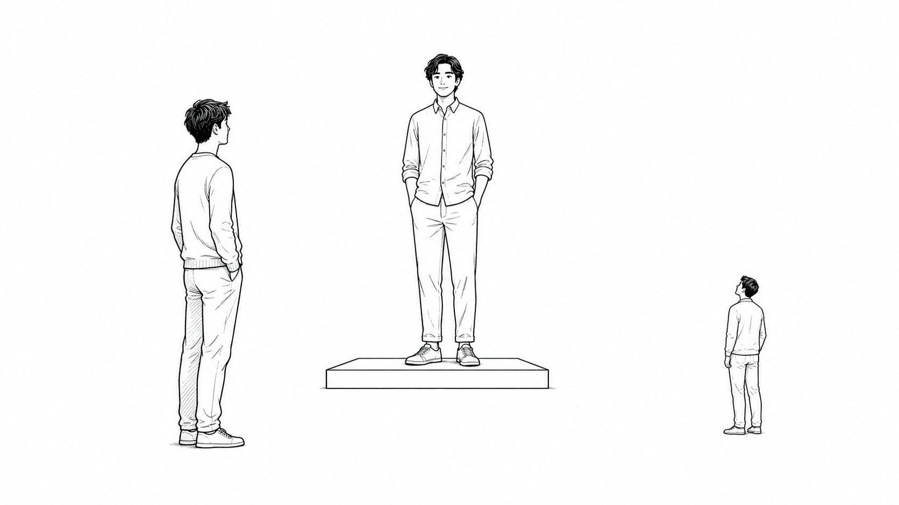

「私も昔はダメでした」が、ブランドを壊すとき。見込客と顧客が聞きたいことは同じじゃない

どーも！とーるです！
「昔のダメだった自分を見せましょう。」
SNS発信では、よく言われますよね。
「失敗談を話したほうが、親近感を持ってもらえます。」
「完璧な姿だけ見せても、共感されません。」
たしかに、間違いではありません。
（僕も、この手のアドバイスを素直に信じてきた側です）
「この人も昔は私と同じだったんだ。」
「この人にできたなら、私にもできるかもしれない。」
そう思ってもらえると、心理的な距離は縮まります。
共感も生まれやすい。
ただ、これ。
誰にでも同じ効果があるわけではありません。
今あなたの発信を見ている人は、本当に「自分と同じ人」を求めているんでしょうか。
もしかしたら、
「自分にはない知識を持っている人。」
「自分では判断できないことを、任せられる人。」
「簡単には手が届かない、すごい人。」
として、あなたを見ているかもしれません。
その人たちに失敗談を見せても、全員が、
「親近感が湧きました！」
となるわけではありません。
中には、
「私が思っていた人と、ちょっと違うかも。」
となる人もいます。
もちろん、0か100かではありません。
どちらが多いのか。
あくまで割合の話です。
「この人みたいになりたい」にも、種類がある
ひとまとめにされがちですが、
「この人みたいになりたい。」
と、
「この人に習って、今の自分を変えたい。」
は、同じではありません。
前者は、その人自身への憧れ。
後者は、その人が持っている知識や判断への信頼です。
さらに、
「この人も昔は私と同じだった。だから私にもできそう。」
と思っている人もいます。
似ているようで、それぞれ求めているものが違うんです。
- その人自身のようになりたい
- その人と同じ結果を得たい
- その人に導いてもらいたい
- 自分にも変われる可能性があると思いたい
全部、同じ「憧れ」や「共感」でくくれそうですが、微妙に違う。
そして、この微妙な違いが、発信の受け取られ方を変えます。
人気アイドルが「昔はダメだった」と話したら？
たとえば、誰もが知っている人気アイドルが、
「昔はオーディションに落ち続けていた。」
「自分には才能がないと思っていた。」
と話したとします。
同じ話を聞いても、全員が同じ反応をするわけではありません。
- 自分もアイドルになりたい人：「この人にもそんな時代があったなら、私にも可能性があるかも」と勇気になる
- この人みたいになりたい人：「努力して今の場所まで来たんだ」と、憧れがむしろ強くなる
- とにかくすごい人だと思っている人：「こんな人でも苦労したんだ」と親近感が生まれる
- 完璧なアイドルでいてほしい人：「そこまで聞きたくなかった」と感じることもある
- この人から学びたい人：克服まで語られれば信頼が増すが、失敗談だけだと不安になる
- この人も自分と同じだと思っている人：共感は強まるが、そのあと上から接されると反発しやすい
過去の失敗談そのものに、
ブランドを上げる力がある。
ブランドを下げる力がある。
と、最初から決まっているわけではないんです。
誰が、どんな「その人像」を持った状態で聞くのか。
そこで効果が変わります。
人は「今までのあなた」と比べている
行動経済学では、人は物事を絶対的に評価するのではなく、すでに持っている基準と比べて評価すると考えます。
これを「参照点依存性」といいます。
いきなり難しそうな言葉が出てきましたが、話は簡単です。
（僕も、なんか賢そうに見えるので使ってます）
最初からその人を、
「親しみやすい人。」
「自分と近い人。」
と思っていれば、失敗談を聞いても、そんなに違和感はありません。
むしろ、
「やっぱり私の気持ちを分かってくれそう。」
となる。
一方で、
「自分にはない答えを持っている人。」
「私には見えないものが見えている人。」
と思っていた場合はどうでしょう。
その人が急に、
「私もポンコツなんです。」
「今でも失敗ばかりで。」
と言い始めると、
「え、そういう人だったっけ？」
となることがあります。
ポンコツが悪いわけじゃありません。
今まで相手の中にあった「あなた像」と、見せ始めた姿にズレがあるからです。
新しくあなたを知った見込客には、親近感として働く。
でも、以前からあなたを尊敬していた顧客には、ブランドが変わったように見える。
同じ発信なのに反応が違うのは、相手が持っている参照点が違うからです。
「苦労した人」と「今もポンコツな人」は、違う
ここも一緒にされやすいのですが、
「昔はできなかった。」
と話すことと、
「今も私はできない人です。」
と見せることは、同じではありません。
たとえば、
「僕も昔は、商品を作っても全然売れませんでした。」
で終わったら、ただの失敗談です。
（しかも、作った本人だけが「絶対これいいのに」と思ってるやつ）
でも、
「そこで何がズレていたのかを分析して、今は売れない原因を見つけられるようになりました。」
まで話せば、失敗が専門性の根拠に変わります。
過去に失敗した。
だから、失敗する人の気持ちが分かる。
過去に失敗した。
だから、失敗する原因を見抜ける。
似ていますが、作られるポジションは別物です。
前者は、距離の近い先輩。
後者は、同じ道を通ってきた専門家です。
失敗談を話すか、話さないか、ではありません。
その話を使って、相手にどんな自分を見せているのか。
ここを考えないと、本人が意図しない方向へブランドが動きます。
見込客が聞きたいことと、顧客が聞きたいこと
SNSで少しややこしいのが、新規の見込客に向けた発信を、既存顧客も見ていることです。
新しくあなたを知った人は、
「私にもできるかもしれない。」
「この人なら気持ちを分かってくれそう。」
という話を聞きたいかもしれません。
でも、すでにあなたを信頼してお金を払った顧客は、
「自分にはない視点を教えてほしい。」
「自分では判断できないことを、示してほしい。」
と思っているかもしれない。
新規を集めるために発信を変えたつもりでも、既存顧客からすれば、
「信頼していた人の、見え方が変わった。」
となる可能性があります。
新規向けの発信は、既存顧客にとっては「あなたの再ブランディング」でもあるんです。
もちろん、
「弱いところを見せたら、既存顧客が全員離れる。」
なんて話ではありません。
むしろ、今まで遠く感じていた人が、失敗談をきっかけにもっと好きになることもあります。
反対に、新しい共感型の発信を見ても、まったく響かない見込客もいる。
だから、0か100かではなく、割合です。
ただ、ポジションを途中で変えれば、
新しく近づいてくる人の割合と、違和感を持って離れていく人の割合が、変わる。
ここは考えておいたほうがいいと思います。
共感で集めて、圧で教える人
そして、もっと大事なのが購入後です。
発信では、
「私もあなたと同じでした。」
「できない気持ち、よく分かります。」
「一緒に変わっていきましょう。」
と伝える。
それを見た人は、
「この人なら私の気持ちを分かってくれそう。」
「同じ目線で、一緒に考えてくれそう。」
と思って申し込みます。
ところが、いざサービスが始まると、
一方的に答えを押しつける。
できない理由も聞かず、強い言葉で動かそうとする。
上下関係を、はっきり作る。
こうなると、顧客が不満を感じるのは、指導が厳しいからではありません。
「聞いていた話と、違う。」
からです。
人は、サービスそのものだけを見て満足や不満を決めているわけではありません。
購入前に抱いた期待と、購入後の体験を比べて判断します。
消費者心理では、これを「期待不一致」といいます。
（横文字でかっこよく言いましたが、要は「話、違うやん」です）
共感型の発信は、人を集めるためだけの言葉じゃないんです。
購入後に、どんな関係を作ってくれるのか。
そこまで相手に期待させる言葉でもあります。
もちろん、専門家として厳しく導くことが悪いわけではありません。
「この人の判断に任せたい。」
「必要なら厳しいことも言ってほしい。」
と思って来た人にとっては、はっきりした指導が価値になります。
問題は、厳しいか優しいか、ではありません。
どんな期待で集めて、実際にはどんな関係を提供しているのか。
そこが合っているか、です。
相手ベースとは、相手に合わせて演じることじゃない
じゃあ、見込客や顧客が聞きたいことだけを言えばいいのか。
というと、それも少し違います。
相手が喜びそうなことを言うために、本来の自分とは違うキャラを演じる。
親しみやすい人が売れそうだから、無理に距離を縮める。
権威が必要そうだから、無理にすごい人を演じる。
これを続けると、発信者が先に疲れます。
毎日、自分じゃない人のコスプレで出社するようなものですからね。
しかも、その発信で集まった人は、演じているあなたとの関係を期待して申し込む。
売れた後も、そのキャラを続けないといけません。
いや、しんどいですよね。
だからブランディングは、存在しない自分を作ることではありません。
自分がストレスなく出せるものの中から、
誰に、どの部分を、どんな角度で見せるのか。
これを選ぶことです。
共感しながら伴走するのが得意なら、距離の近い先輩として見せればいい。
相手の感情に寄り添うより、原因を分析して答えを示すほうが得意なら、無理に「私も同じです」と降りていかなくてもいい。
自分の指導スタイルと違う人を集めると、発信者も顧客も、あとで苦しくなります。
言いたいことより、相手が聞きたいこと
発信では、
「今日は何を言いたいか。」
から考えがちです。
でも、本当に考えたいのは、
「今の見込客は、何を聞きたいのか。」
「既存顧客は、何を聞きたいのか。」
「その発信を見たとき、相手の中にどんな自分が作られるのか。」
です。
相手ベースに考えるとは、耳ざわりのいいことだけを言うことではありません。
見込客を集める言葉が、既存顧客の中にある「あなた像」を壊さないか。
そして、その言葉で作った期待を、購入後も自分が引き受けられるか。
そこまで考えることです。
以前のコラムで、専門家は「情報の非対称性」、先輩は「共感の対称性」で売れる、という話を書きました。（#98）
どちらが正解、という話ではありません。
ただ、どちらのポジションで集めるかによって、購入後に求められる関係まで変わります。
ブランディングは、よく見せることでも、別人を演じることでもない。
誰に、どんな期待を持ってもらうのか。
そして、その期待に、無理なく応え続けられるのか。
発信。
商品。
売った後の自分。
この3つが無理なくつながる場所に、その人にとって一番ストレスの少ないブランドがあります。
目先の再生数や新規獲得だけを考えて、自分のポジションを変える前に。
その発信を、今の顧客が見たらどう感じるのか。
その発信で来た人に、自分はどう接することになるのか。
一度、そこまで考えてみてもいいかもしれません。
とーる｜猫好きの行動経済アナリスト